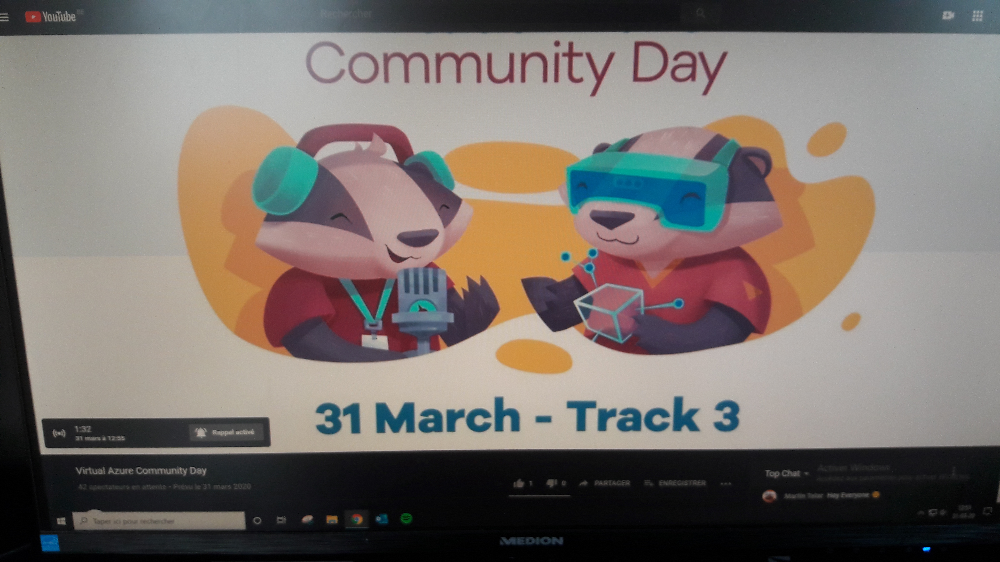
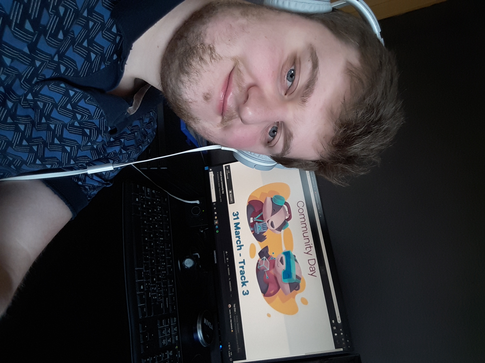
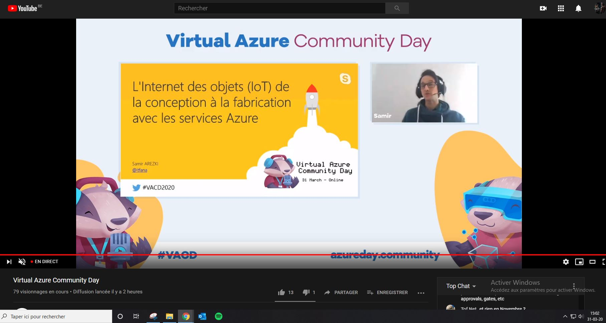
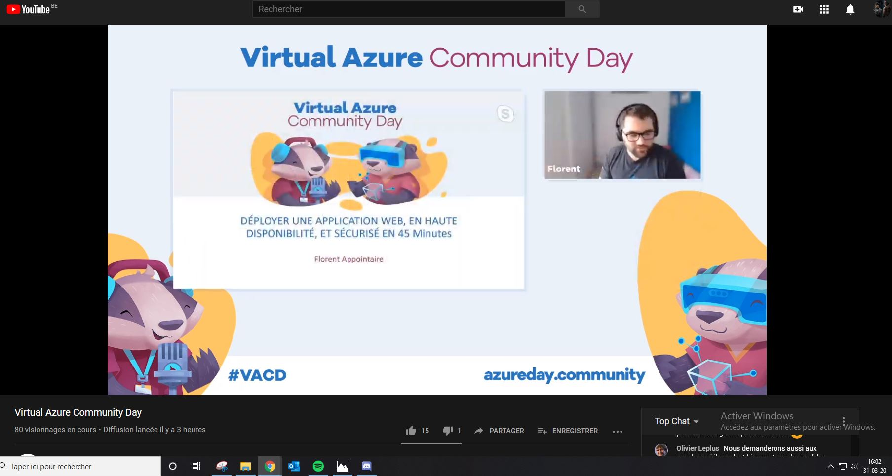
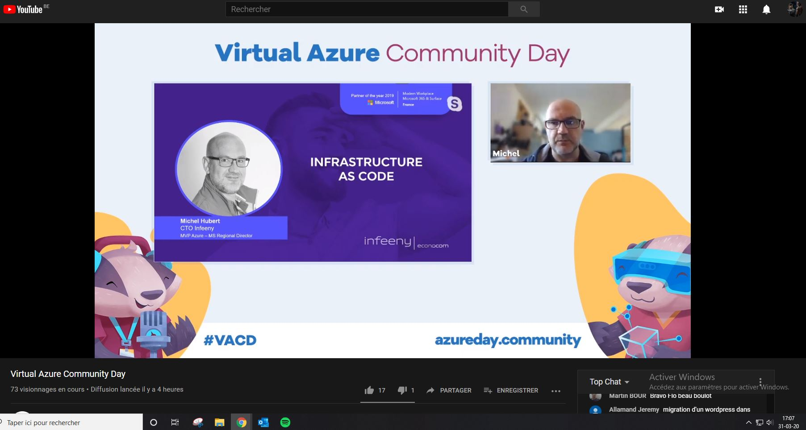
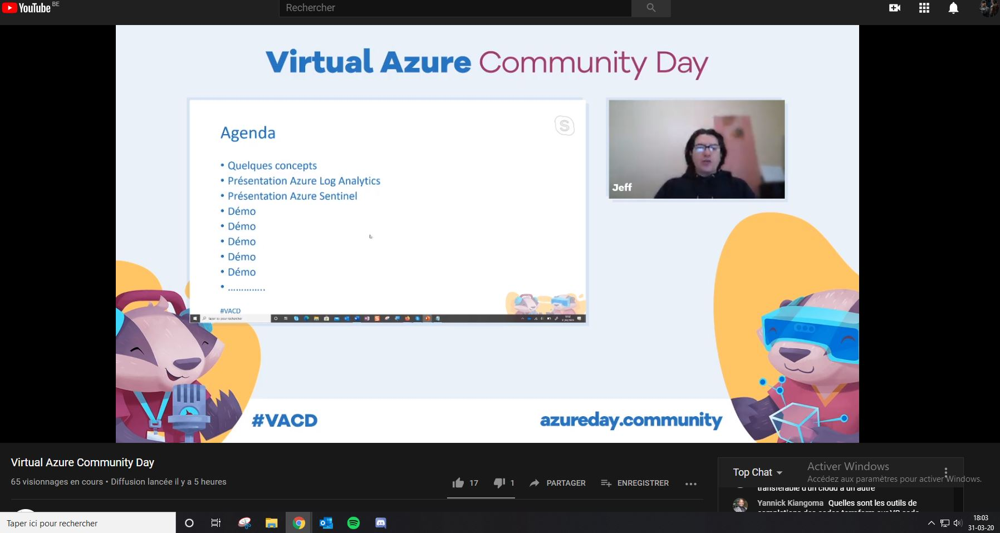
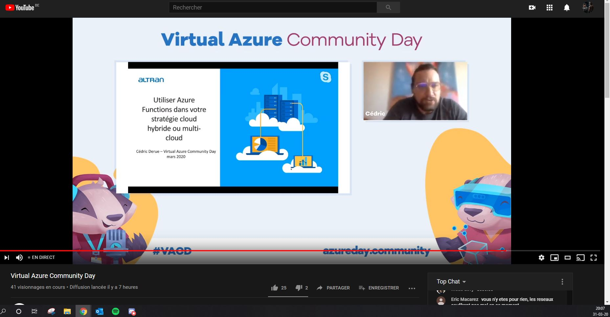
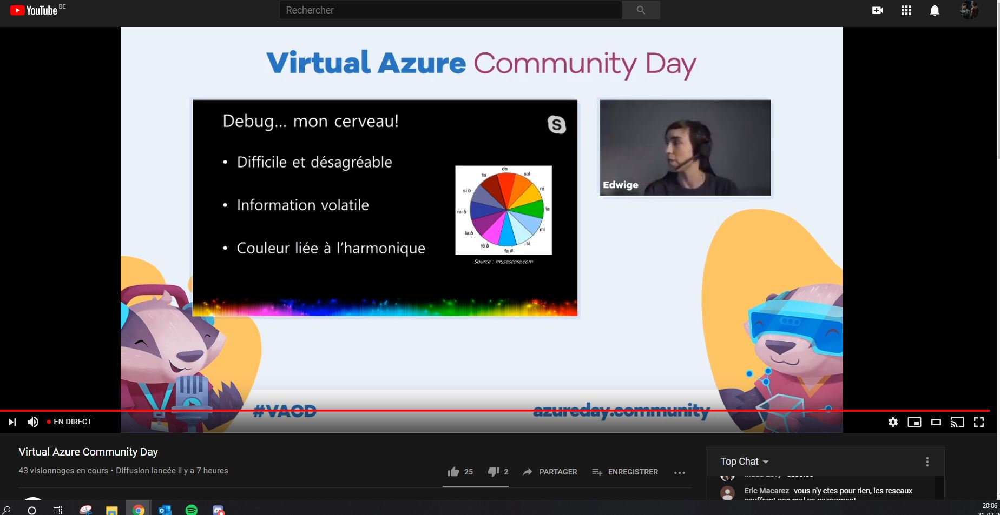

Le 31 mars 2020 s'est déroulé la Virtual Azure Community Day.
Entre 13h et 20h, 7 conférences de 1h sur Azure et ses fonctionnalités
se sont faites
En cette période, mon stage avait été suspendu donc je me suis dis que
ces conférences seraient intéressantes. Je lesai suivi en direct.
Preuve de ma participation


A 13h, la conférence Azure 101 - Services et outils pour vos
développeurs a été présentée par Denis Voituron, il a vu les bases
d'Azure.

A 14h, Azure Pipelines a été présenté par Nathan Pire et Adrien
Clerbois du MIC de Mons rencontré au Devday et à la formation
React.

A 15h, l'internet des objets (IoT) de la conception à la fabrication
avec les services Azure.

A 16h, déployer une application web en haute disponiblité et sécurisée
en 45 min

A 17h, Azure et l'infrastructure as Code

A 18h, détection d'attaques et traitement via Azure Log Analytics et
Azure Sentinel

A 19h, utiliser Azure Functions pour votre stratégie cloud hybride ou
multi-cloud. + une autre conférence supplémentaire

